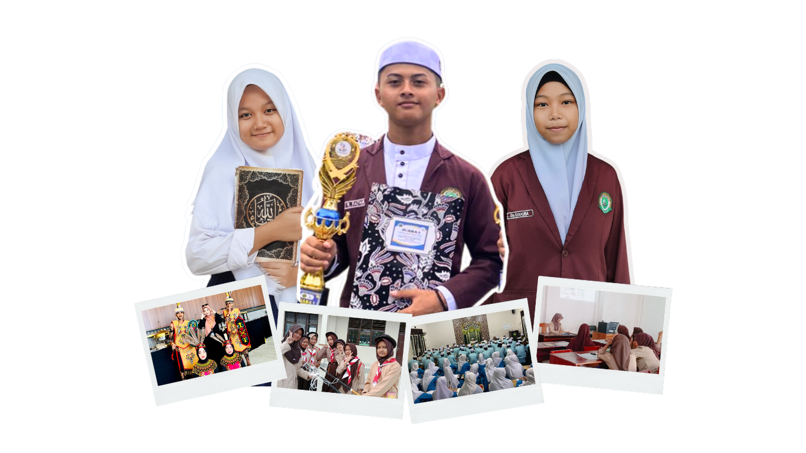
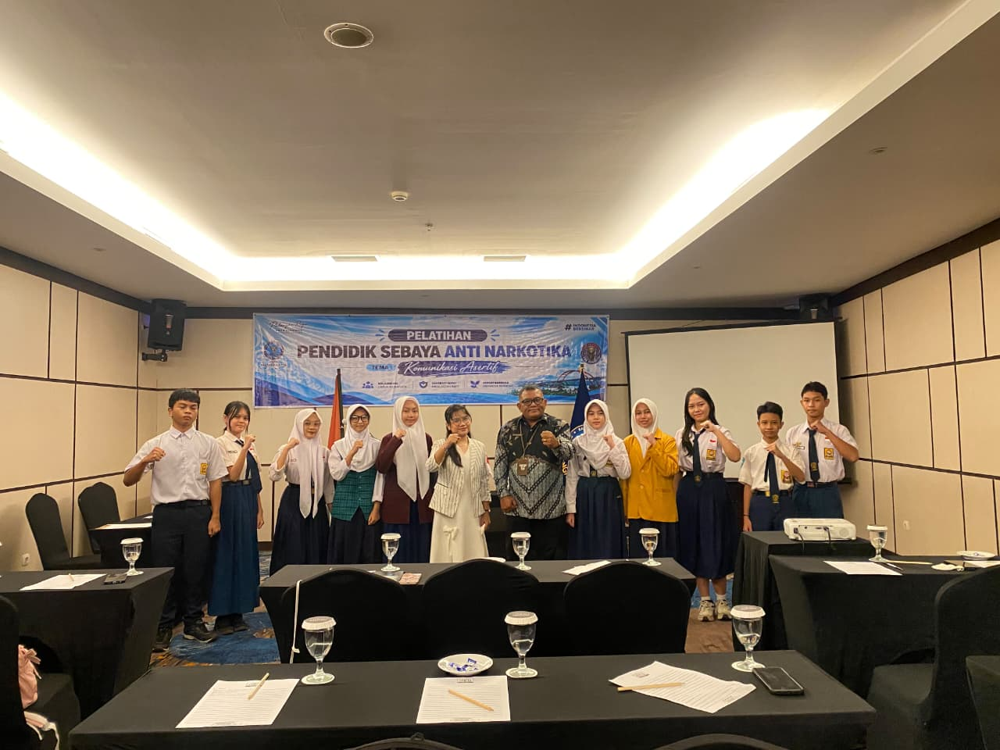
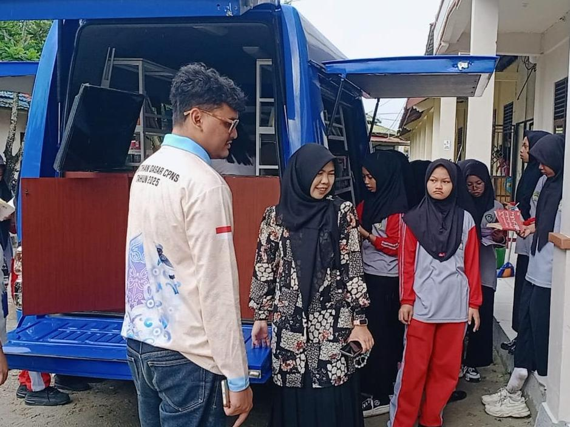
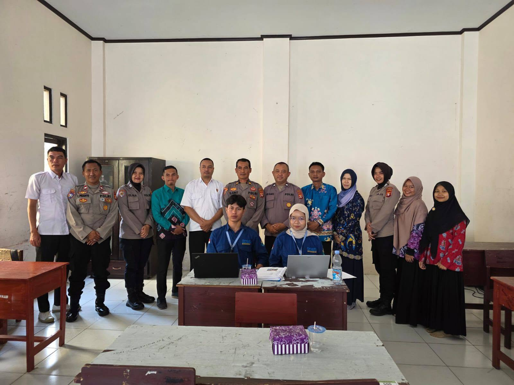
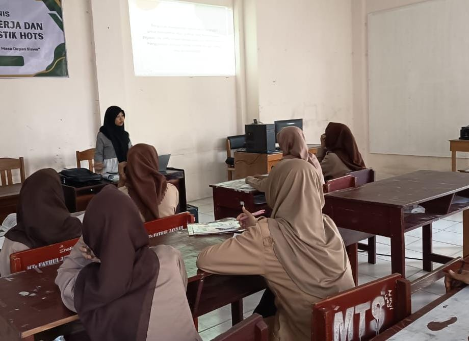
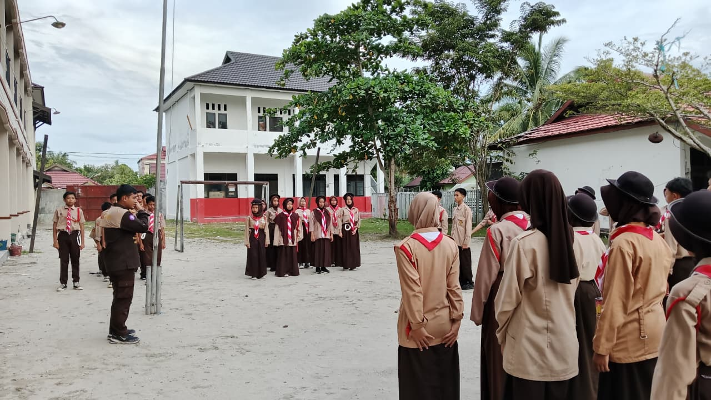
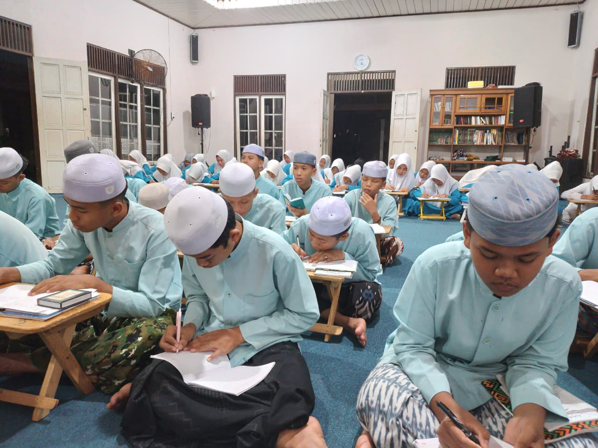

Madrasah Tsanawiyah Fathul Jannah adalah lembaga pendidikan Islam yang berkomitmen menanamkan nilai-nilai keimanan, akhlak mulia, dan ilmu pengetahuan.
Mengenal Madrasah
Madrasah Tsanawiyah Fathul Jannah adalah lembaga pendidikan Islam yang berkomitmen membentuk generasi masa depan yang beriman, berakhlak mulia, cerdas, dan berilmu.
Dengan suasana belajar yang nyaman dan tenaga pendidik profesional, kami berupaya menghadirkan pembelajaran modern yang bernafaskan nilai-nilai keislaman.
Informasi kegiatan dan prestasi MTs Fathul Jannah



Membangun generasi berilmu dan berakhlak mulia
Meningkatkan kualitas pendidikan untuk menciptakan lulusan yang cerdas dan berkarakter.
Menjadikan madrasah sebagai pusat pembinaan karakter dan nilai-nilai keislaman.
Mengembangkan ilmu pengetahuan dan keterampilan untuk menghadapi tantangan zaman.
Dokumentasi kegiatan MTs Fathul Jannah



"Selamat datang wahai penuntut ilmu. Sesungguhnya penuntut ilmu benar-benar ditutupi para Malaikat dan dinaungi dengan sayap-sayapnya."
HR. Ath-Thabrani